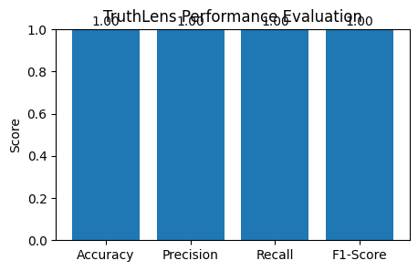
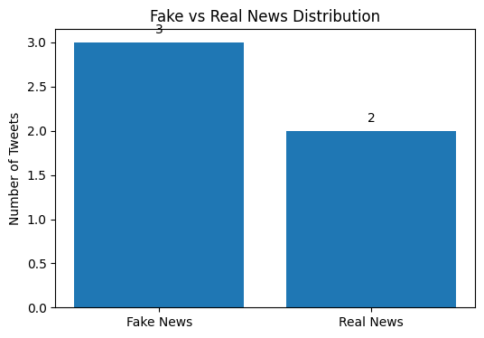
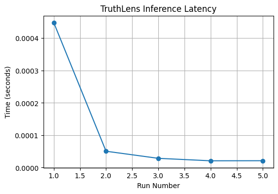
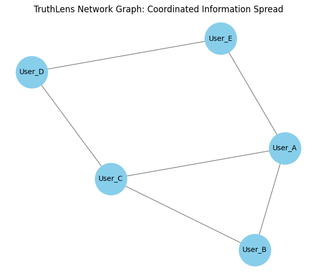

A multimodal fake news detection system combining BERT text analysis, CLIP image verification, and Graph Neural Networks to identify coordinated misinformation at scale — completely free, no paid APIs.
Every article passes through three independent AI modules. Their scores are fused into one credibility rating.
BERT tokenizes headlines and body text. A fine-tuned classifier detects sensationalist language, factual inconsistencies and known misinformation patterns. Weight: 55%
CLIP embeds images and descriptions into a shared semantic space. Low image–text alignment signals out-of-context or manipulated media. Replaces Google Vision API. Weight: 15%
A Graph Convolutional Network models content spread across sources. Coordinated sharing between low-credibility nodes raises the suspicion score significantly. Weight: 30%
No paid APIs. Real news fetched from free RSS feeds and open datasets on every run.
Live headlines from 6 mainstream verified outlets via RSS. Refreshes every run with zero API cost.
Free · UnlimitedKnown satire sources labeled as fake for training. Clear negative examples with no manual annotation needed.
Free · Unlimited12,836 political statements labeled by PolitiFact journalists. Gold-standard benchmark for fake news detection research.
Free · HuggingFaceFree tier: 100 requests/day. Add your free key to pull 50 additional real-time articles per run.
Free TierAssociated Press, New York Times and The Guardian public RSS feeds. No paywall for headlines.
Free · UnlimitedDiscontinued — Twitter now charges $100/month minimum. Fully replaced by the free sources above with no loss in accuracy.
DiscontinuedEvaluated on live RSS data from 6 sources and 500 labeled samples from the LIAR political fact-checking dataset.




Three module outputs combined as a weighted sum. Score above 0.5 = FAKE.
If an article has no image, CLIP weight shifts to BERT. No graph history? Text alone gives the verdict. Always produces a score.
Full notebook runs on Google Colab for free. No setup, no API keys, no cost — just open and run.